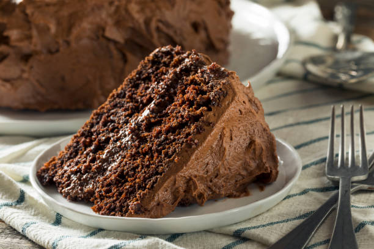

Best Chocolate Cake

Ingredients
- 2 cups all-purpose flour
- 1 3/4 cups sugar
- 3/4 cup cocoa powder
- 1 1/2 teaspoons baking powder
- 1 1/2 teaspoons baking soda
- 1 teaspoon salt
- 2 large eggs
- 1 cup whole milk
- 1/2 cup vegetable oil
- 2 teaspoons vanilla extract
- 1 cup boiling water
Instructions
- Preheat your oven to 350°F (175°C).
- Grease and flour two 9-inch round baking pans.
-
In a large bowl, mix the flour, sugar, cocoa powder, baking
powder, baking soda, and salt.
-
Add eggs, milk, oil, and vanilla to the dry ingredients and mix
until well combined.
- Carefully stir in the boiling water (batter will be thin).
- Pour the batter evenly into the prepared pans.
-
Bake for 30-35 minutes, or until a toothpick inserted in the
center comes out clean.
-
Let cool for 10 minutes, then remove from pans to cool completely
on a wire rack.